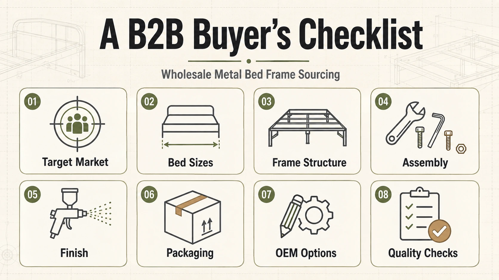
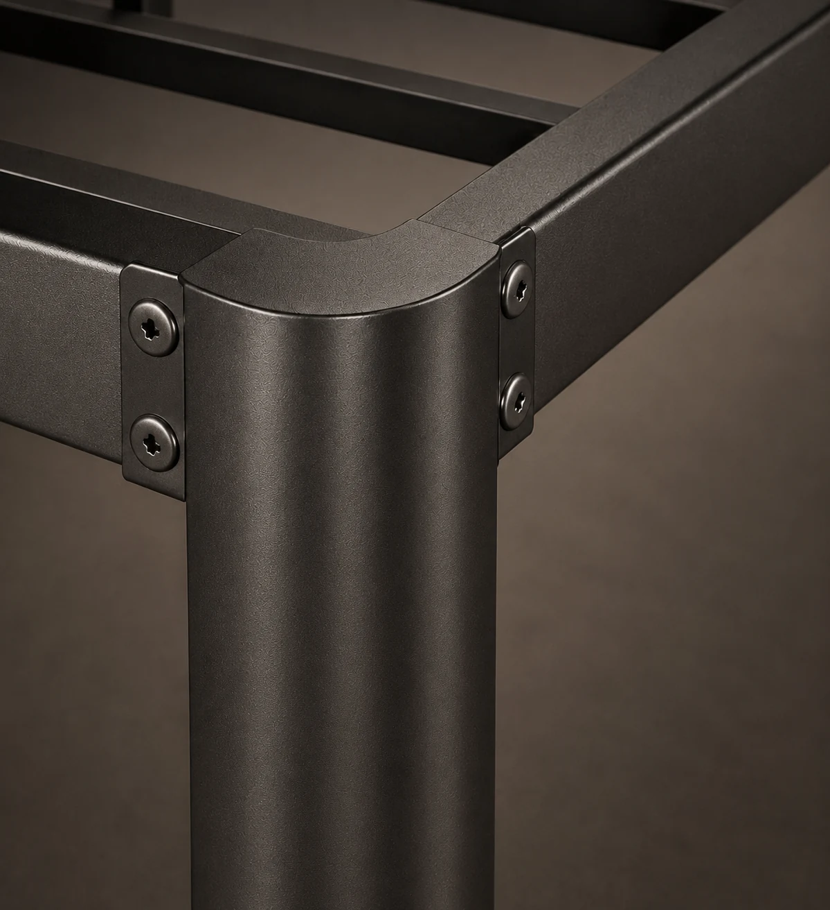

On this page
- 1. Start With the Target Market and Sales Channel
- 2. Build a Focused Product Range
- 3. Confirm Market Sizes and Mattress Compatibility
- 4. Review the Frame Structure, Not Only the Product Photo
- 5. Evaluate the Assembly Experience
- 6. Define Finish, Color and Visible Quality
- 7. Match the Packaging to the Sales Model
- 8. Clarify OEM and Private-Label Requirements
- 9. Review Quality Control and Sample Approval
- 10. Compare Suppliers on More Than Unit Price
- B2B Metal Bed Frame Sourcing Checklist
- Frequently Asked Questions
- What information should a buyer send when requesting a quotation?
- Should buyers choose a metal bed frame supplier based on the lowest price?
- Can an existing metal bed frame be adapted for another market?
- Why should mattress size and overall bed frame size be checked separately?
- Discuss Your Metal Bed Frame Sourcing Requirements
Sourcing metal bed frames for wholesale is not simply a matter of finding a model and comparing unit prices. Two frames that look similar in a photograph can differ significantly in structure, assembly logic, finish, packaging and suitability for a particular sales channel.
A more reliable sourcing process starts with the commercial requirement and works backward into the product specification. Buyers should clarify where the bed frame will be sold, how it will be delivered, who will assemble it and what level of customization is required before comparing quotations.
This guide provides a practical checklist for retailers, wholesalers, online brands, project buyers and private-label programs sourcing metal bed frames from a manufacturer or supplier.

1. Start With the Target Market and Sales Channel
The same metal bed frame may not be suitable for every market or channel. A product intended for online retail may need compact packaging, clear instructions and a straightforward assembly experience. A wholesale distributor may prioritize a focused product range and repeatable specifications. A dormitory or accommodation project may place greater emphasis on structure, installation and maintenance.
Before asking for a quotation, define the following:
- Target country or region
- Sales channel: retail, online, wholesale, project supply or private label
- Intended customer and product positioning
- Required product categories and size range
- Packaging, labeling and instruction requirements
- Planned purchasing volume and launch schedule
A clear buying brief helps the supplier recommend a more relevant product direction and makes later price comparisons more meaningful.
2. Build a Focused Product Range
Wholesale buyers often perform better with a clear, differentiated range than with a long list of similar models. Each product should have an identifiable role within the collection.
Common metal bed frame directions include:
- Platform and heavy-duty frames for practical, space-efficient programs
- Bed frames with headboards or headboard-and-footboard designs for more decorative collections
- Bunk and dormitory frames for shared accommodation and project use
- Daybeds, foldable beds and universal rail frames as complementary categories
- Custom structures for differentiated or private-label programs
When reviewing a wholesale metal bed frame range, look beyond appearance. Consider how the models differ in target user, price position, height, support structure, assembly, packaging and presentation. Too much overlap can make the range harder to sell and more complicated to manage.
3. Confirm Market Sizes and Mattress Compatibility
Bed names and dimensions are not fully standardized across the United States, the United Kingdom and continental Europe. A King in one market may not correspond to a King in another, and the mattress size is not necessarily the same as the overall external size of the bed frame.
For each model, confirm:
- The intended mattress dimensions
- The internal support area
- The overall external dimensions of the assembled frame
- Headboard, footboard and side-rail clearances
- Whether the structure needs to be adapted for another market
For detailed regional references, use the Apexnix US, UK and EU bed frame size guide rather than assuming that size names are interchangeable.
4. Review the Frame Structure, Not Only the Product Photo
A product photograph cannot show every structural detail. The supplier and buyer should align the specification before evaluating whether two products are truly comparable.
Important review points may include:
- Tube profile, component layout and finished dimensions
- Side rails, center supports, legs and slat arrangement
- Connection method, bracket design and hole positioning
- Stability after complete assembly
- Floor-contact points and protective components
- Compatibility between the frame, slats and intended mattress

If a load or durability claim is commercially important, ask what structure and test conditions the claim refers to. A number without a defined product specification or evaluation method is not enough for a reliable comparison.
5. Evaluate the Assembly Experience
Assembly affects customer satisfaction, installation time and after-sales risk. A frame that is structurally sound can still create problems if parts are difficult to identify, holes do not align or the instruction manual is unclear.
A sample review should consider:
- The number and sequence of assembly steps
- Part labels and hardware identification
- Tools required for installation
- Fit between components and connection points
- Clarity of the instruction manual
- Completeness of screws, accessories and spare parts
- Stability and noise after trial assembly
For online and retail programs, the assembly experience is part of the product. It should be reviewed before the packaging and instructions are finalized.
6. Define Finish, Color and Visible Quality
Surface requirements influence both product appearance and quality consistency. The buyer should confirm the required color, texture and acceptable visual standard with a physical sample or an agreed reference whenever possible.
Typical review points include:
- Color and finish consistency between components
- Coverage around joints, corners and connection areas
- Visible welding and surface preparation
- Scratches, marks or coating defects
- Appearance of parts that remain visible after assembly
The approved finish should be recorded as part of the product specification rather than treated as a general verbal description.
7. Match the Packaging to the Sales Model
Packaging is not only a shipping carton. It affects freight efficiency, product protection, warehouse handling, customer presentation and the risk of missing or damaged parts.
Packaging requirements may differ by channel:
- Online retail may require compact packaging, internal protection and clear parcel identification.
- Wholesale distribution may prioritize repeatable carton specifications and warehouse-friendly labeling.
- Retail programs may require brand artwork, product information and presentation standards.
- Project supply may need clear room, building or installation references.
Review how long components are protected, where the hardware is placed, how parts are separated and how labels and instructions are included. Flat-pack bed frame packaging should be discussed together with the product structure rather than after the product has already been finalized.
8. Clarify OEM and Private-Label Requirements
Customization can range from a small adjustment to a completely new product structure. Buyers should distinguish between adapting an existing model and developing a new platform from the beginning.
Possible OEM discussion fields include:
- Market-specific dimensions and height
- Support layout and product configuration
- Color and surface finish
- Headboard, footboard or accessory changes
- Hardware, instructions and labeling
- Carton artwork and private-label packaging
The more extensive the change, the more important it becomes to confirm drawings, samples, specifications and packaging before mass production. A custom bed frame development project should have a clear approval record rather than relying on scattered messages.
9. Review Quality Control and Sample Approval
Quality control should connect the approved specification with routine factory checks. The exact inspection plan depends on the product and order requirements, but common control points may include materials and components, dimensions, welding and connections, surface finish, trial assembly, hardware, instructions and packaging.
Before approving a sample, buyers should record:
- Confirmed dimensions and product configuration
- Approved color and finish
- Final hardware and instruction set
- Packaging structure, labels and artwork
- Any agreed correction from the sample review
- The reference used for production approval
A structured bed frame quality control process reduces ambiguity between product discussion, sample approval and production.
10. Compare Suppliers on More Than Unit Price
Unit price matters, but it should be compared against the same product scope. A lower quotation may reflect a different structure, finish, hardware set, instruction requirement or packaging configuration.
A B2B sourcing decision should also consider:
- Understanding of the bed frame category
- Ability to explain and document the proposed specification
- Support for samples, OEM changes and packaging development
- Routine production and quality-control practices
- Communication speed and problem-solving approach
- Fit with the buyer's channel and long-term product plan
The objective is not to find a supplier that claims to do everything. It is to find a manufacturing partner whose product range, development support and operating approach fit the intended program.
B2B Metal Bed Frame Sourcing Checklist
| Review area | Questions to confirm |
|---|---|
| Market and channel | Where will the product be sold, and how will it be delivered and assembled? |
| Product range | What role does each model play within the collection? |
| Size | Which mattress dimensions and regional standards apply? |
| Structure | What support layout, connections and configuration are being quoted? |
| Assembly | Are the parts, hardware and instructions clear and complete? |
| Finish | What color, texture and visible quality standard are approved? |
| Packaging | Does the carton protect the product and suit the sales channel? |
| OEM | Is the project adapting an existing model or developing a new structure? |
| Quality | Which routine checks and sample approval records apply? |
| Commercial comparison | Are price, specification, packaging and service scope being compared consistently? |
Frequently Asked Questions
What information should a buyer send when requesting a quotation?
Provide the target market, sales channel, product direction, mattress sizes, key structural requirements, finish, packaging expectations, private-label needs and planned purchasing volume. This gives the supplier a clearer basis for product and quotation review.
Should buyers choose a metal bed frame supplier based on the lowest price?
Price should be compared only after confirming that the structure, finish, hardware, instructions, packaging and service scope are equivalent. Otherwise, two quotations may represent different products.
Can an existing metal bed frame be adapted for another market?
In many cases, an existing structure can be reviewed for changes to dimensions, height, finish, configuration or packaging. The feasibility depends on the model and the extent of the requested change.
Why should mattress size and overall bed frame size be checked separately?
The mattress-support area and the external dimensions of the assembled frame serve different purposes. Headboards, side rails, legs and structural clearances can make the overall product larger than the mattress dimensions.
Discuss Your Metal Bed Frame Sourcing Requirements
Apexnix is a B2B bed frame brand and company with its own manufacturing facility and more than 25 years of factory experience. We support wholesale product selection, new OEM structure development, adaptations to existing structures, routine factory quality control and packaging discussions for different markets and channels.
Share your target market, sales channel, preferred product direction, size requirements and packaging expectations to begin a structured product discussion.